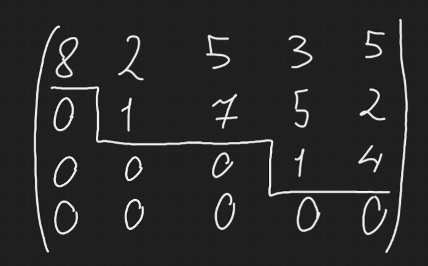
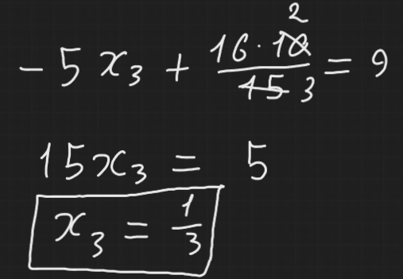

Ступенчатый вид расширенной матрицы - это такой вид, при котором все нулевые строки (то есть строки, которые в результате элементарных преобразований стали состоять только из нулей) располагаются под ненулевыми, и в каждой ненулевой строке ее первый ненулевой элемент стоит правее первого ненулевого элемента предыдущей строки.

Теорема Гаусса говорит о том, что любую расширенную матрицу системы можно привести к ступенчатому виду при помощи элементарных преобразований.
Алгоритм метода Гаусса
- В первом столбце расширенной матрицы должен быть хотя бы один ненулевой коэффициент, в противном случае x1 не участвует в нашей системе, тогда кладем на него и вычеркиваем первый столбец.
Если a11 != 0, то все нештяк, иначе ищем такой ai1, который не равен 0, находим и меняем местами i-ую строчку с первой по Э.П. I. У нас получается теперь в первой строчке коэффициент a11 не равен 0. - Теперь прибавляем ко всем строчкам, что ниже первой, первую строчку умноженную на такую λ ∈ ℝ, что a11 * λ + ai1 = 0. Решим это мега уравнение и получим, что λ = -\(\frac{a_{i1}}{a_{11}}\). Ну то есть грубо говоря, используем Э.П. III так, чтобы занулить все коэффициенты первого столбца, кроме первого.
- Так теперь когда мы занулили все коэффициенты первого столбца, которые находятся под первой строчкой, ищем n > 1, такой что в столбце с ним есть хотя бы один ненулевой коэффициент и проделываем тот же алгоритм, что в первых двух шагах по отношению к n-ому столбцу. Так просто повторяем, пока не дойдем до конца матрицы. Воуля, мы получаем расширенную матрицу СЛУ в ступенчатом виде.
- Для окончания решения СЛУ нам остается обратный ход метода Гаусса - находим значения xi (i - индекс последнего x - предпоследний столбец системы) для последней строчки, далее идем вверх по строчкам и, используя найденный нами xi, находим xi - 1 и так далее, пока не найдем все x-ы.
Решим СЛУ методом Гаусса:
